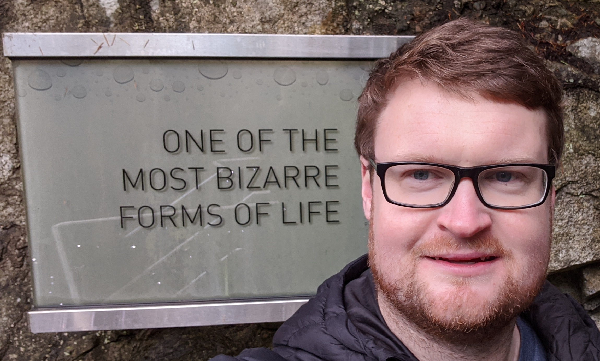

|  | Brendan O'Donoghue, Ph.D. |
Ph.D., M.S., Electrical Engineering, Stanford University,
January 2013
B.A., M.A., M.Eng., Information and Computer Engineering, Gonville and Caius College, Cambridge University, June 2007
Convex optimization
Machine Learning
Reinforcement Learning
Dynamic systems and control
SCS: C package for solving convex cone problems via operator splitting
T. Zahavy, A. Barreto, D. Mankowitz, S. Hou, B. O'Donoghue, I. Kemaev, and S. Singh
V. Nair, S. Bartunov, F. Gimeno, I. von Glehn, P. Lichocki, I. Lobov, B. O'Donoghue, N. Sonnerat, C. Tjandraatmadja, P. Wang et al.
J. Zhang, J. Kim, B. O'Donoghue, and S. Boyd
B. O'Donoghue, T. Lattimore, and I. Osband
B. O'Donoghue
B. O'Donoghue, I Osband, and C. Ionescu
B. O'Donoghue and C. J. Maddison
G. Swirszcz, B. O'Donoghue, and P. Kohli
C. Qin, K. (Dj) Dvijotham, B. O’Donoghue, R. Bunel, R. Stanforth, S. Gowal, J. Uesato, G. Swirszcz, and P. Kohli
E. Grefenstette, R. Stanforth, B. O'Donoghue, J. Uesato, G. Swirszcz, and P. Kohli
C. J. Maddison, D. Paulin, Y. W. Teh, B. O'Donoghue, and A. Doucet
J. De Fauw et al.
J. Zhang, B. O'Donoghue, and S. Boyd
B. O'Donoghue
K. (Dj) Dvijotham, S. Gowal, R. Stanforth, R. Arandjelovic, B. O'Donoghue, J. Uesato, and P. Kohli
J. Uesato, B. O'Donoghue, A. van den Oord, and P. Kohli
B. O'Donoghue, I. Osband, R. Munos, and V. Mnih
B. O'Donoghue, R. Munos, K. Kavukcuoglu, and V. Mnih
Y. Shi, J. Zhang, B. O’Donoghue, and K. Letaief
B. O'Donoghue, E. Chu, N. Parikh, and S. Boyd
E. Chu, B. O'Donoghue, N. Parikh, and S. Boyd
Y. Wang, B. O'Donoghue, and S. Boyd
B. O'Donoghue, Y. Wang, and S. Boyd
B. O'Donoghue, G. Stathopoulos, and S. Boyd
T. Goldstein, B. O'Donoghue, and S. Setzer
S. Boyd, M. Mueller, B. O'Donoghue, and Y. Wang
B. O'Donoghue and E. J. Candès
B. O'Donoghue, M. Peacock, J. Lee, and L. Capriotti
B. O'Donoghue, Y. Wang, and S. Boyd
B. O'Donoghue